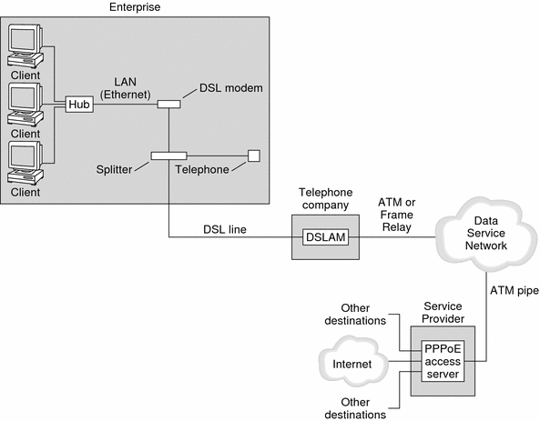

Previous
Previous
Support for DSL Users Through PPPoE
Many network providers and individuals who are working at home use Digital Subscriber Line (DSL) technology to provide fast network access. To support DSL users, Solaris PPP 4.0 includes the PPP over Ethernet (PPPoE) feature. PPPoE technology enables multiple hosts to run PPP sessions over one Ethernet link to one or more destinations.
If one of the following factors applies to your situation, you should use PPPoE:
You support DSL users, possibly including yourself. Your DSL service provider might require users to configure a PPPoE tunnel to receive services over the DSL line.
Your site is an ISP that intends to offer PPPoE to customers.
This section introduces terms that are associated with PPPoE and an overview of a basic PPPoE topology.
PPPoE Overview
PPPoE is a proprietary protocol from RedBack Networks. PPPoE is a discovery protocol, rather than another version of standard PPP. In a PPPoE scenario, a machine that initiates PPP communications first must locate, or discover, a peer that runs PPPoE. The PPPoE protocol uses Ethernet broadcast packets to locate the peer.
After the discovery process, PPPoE sets up an Ethernet-based tunnel from the initiating host, or PPPoE client, to the peer, the PPPoE access server. Tunneling is the practice of running one protocol on top of another protocol. Using PPPoE, Solaris PPP 4.0 tunnels PPP over Ethernet IEEE 802.2, both of which are data link protocols. The resulting PPP connection behaves like a dedicated link between the PPPoE client and the access server. For detailed information about PPPoE, see Creating PPPoE Tunnels for DSL Support.
Parts of a PPPoE Configuration
Three participants are involved in a PPPoE configuration: a consumer, a telephone company, and a service provider, as the following figure shows.
Figure 15-4 Participants in a PPPoE TunnelPPPoE Consumers
As system administrator, you might assist consumers with their PPPoE configurations. One common type of PPPoE consumer is an individual who needs to run PPPoE over a DSL line. Another PPPoE consumer is a company that purchases a DSL line through which employees can run PPPoE tunnels, as illustrated in the previous figure.
The main reason for a corporate consumer to use PPPoE is to offer PPP communications through a high-speed DSL device to a number of hosts. Often, a single PPPoE client has an individual DSL modem. Or, a group of clients on a hub might share a DSL modem that is also connected to the hub by an Ethernet line.
Note - DSL devices are technically bridges, not modems. However, because common practice is to refer to these devices as modems, this guide uses the term “DSL modem.”
PPPoE runs PPP over a tunnel on the Ethernet line that is connected to the DSL modem. That line is connected to a splitter, which, in turn connects to a telephone line.
PPPoE at a Telephone Company
The telephone company is the middle layer of the PPPoE scenario. The telephone company splits the signal that is received over the phone line by using a device that is called a Digital Subscriber Line Access Multiplexer (DSLAM). The DSLAM breaks out the signals onto separate wires, analog wires for telephone service, and digital wires for PPPoE. From the DSLAM, the digital wires extend the tunnel over an ATM data network to the ISP.
PPPoE at a Service Provider
The ISP receives the PPPoE transmission from the ATM data network over a bridge. At the ISP, an access server that runs PPPoE functions as the peer for the PPP link. The access server is very similar in function to the dial-in server that was introduced in Figure 15-2, but the access server does not use modems. The access server converts the individual PPPoE sessions into regular IP traffic, for example Internet access.
If you are a system administrator for an ISP, you might be responsible for configuring and maintaining an access server.
Security on a PPPoE Tunnel
The PPPoE tunnel is inherently insecure. You can use PAP or CHAP to provide user authentication for the PPP link that is running over the tunnel.